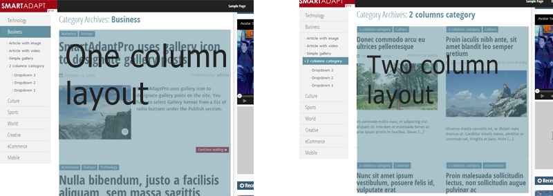

“SmartAdapt Pro” Documentation by “Peter Bielecki” v1.1
“SmartAdapt Pro”
Created: 12/01/2014
By: Peter Bielecki
Email: netbiel@gmail.com
Thank you for purchasing my theme. If you have any questions that are beyond the scope of this help file, please feel free to email via my user page contact form here. Thanks so much!
Table of Contents
- About SmartAdapt
- Installation of WordPress
- Theme Installation
- Post Formats
- Add Gallery Post
- Add Video Post
- Menus
- Custom Widgets & Sidebars
- Shortcodes
- Category Layout
- Theme Customizer
- Control Sections
- Custom Header
- Header Banner
- Responsive Tables
- Extended User Profile
- Sources and Credits (We've used the following images, icons or other files as listed.)
A) About SmartAdapt Pro - top
SmartAdapt Pro is a premium version of SmartAdapt Wordpress Theme. Smartadapt Pro adds exciting new customization features to the Theme Customizer and other powerful customization tools like shortcodes or category layout selector. You can now faster and easier than before launch a custom responsive website - blog or small magazine. You can choose proper layout, menu position, content and sidebar width in just a few clicks
B) Installation of WordPress - top
For information in regard to installing the WordPress platform, please see the WordPress Codex - http://codex.wordpress.org/Installing_WordPress
C) Theme Installation - top
To install this theme you must have a working version of WordPress already installed. Extract the zipped package downloaded from creativemarket.com to your desktop, in the extracted package you will find smartadaptpro.zip file which is the WordPress theme.
You can install the theme in two ways:
- The first option how to install this Theme would be to directly upload the SmartAdapt Pro.zip file via WordPress Theme Uploader:
- Log into your WordPress admin panel
- Go to Appearance > Themes
- Click Install Themes
- Click Upload
- After that you need to find the "SmartAdapt Pro.zip" in the Upload folder and click Install now.
- The second option how to install this Theme would be the upload via FTP manager. After extracting smartadaptpro.zip file you have to upload the extracted folder to /wp-content/themes/ folder on your server. Log into your WordPress admin panel and navigate to Apperance -> Add New Themes -> Upload page. Select smartadaptpro.zip file. Press the Install Now button to upload and install the theme. After uploading SmartAdapt Pro, you have to activate it. Go to Appearence -> Settings page and activate the theme.
D) Post Formats - top
Post Formats is a popular feature that is part of the WordPress core. A Post Format is a piece of meta information that can be used by a theme to customize its presentation of a post. More information abaout Post Formats you will find at the WordPress Codex http://codex.wordpress.org/Post_Formats
SmartAdapt Pro supports the following Post Formats:
- Standard
– Your normal, default blog post. - Link
- A link to another site. - Image
- These posts highlight your images - Quote
- A quotation.These posts highlight your blockquoted text. - Status
- A short status update, similar to a Twitter status update. - Video
- Post containing a video from YouTube or another third-party video sharing service such as Vimeo. You can also upload videos on your site. SmartAdapt Pro uses video icon to designate video posts on the site.
Video icon to designate video posts -
Gallery - A gallery of images. Post will likely contain a gallery shortcode and will have image attachments. SmartAdapt Pro uses gallery icon to designate gallery posts on the site.
Gallery icon to designate gallery posts - audio - Post with an audio file. Could be used for Podcasting.
- chat - Post with a chat transcript
E) Add Gallery Post - top
WordPress has gallery features built in, so you don’t even need a plugin to add a basic photo gallery to a post or page. You can add the gallery to a new or an existing post and pages. To add the gallery, follow these steps:
1. Open the edit screen for the post or page where you want to insert the gallery.
2. Position your cursor where you want the gallery to appear.
3. Click on the Add Media button.
Media button
4. This will open the WordPress media uploader. Now you need to click on Create Gallery link that you see on the left side of the screen. To add images to the gallery, you can either upload the images from your computer or choose existing images from your media library.
5. Once you have selected all the images that you want to add in your gallery, click on “Create New Gallery” button in the media uploader. Media uploader will then show your selected images in the Edit Gallery view.
WordPress media uploader
6. In the Edit gallery view you can add captions to your images, change the order of images by simply dragging and dropping them in the order you want them to appear in.
Choose how you want the gallery to be displayed in the Gallery Settings area. If you want to use
photoswype script in your new Gallery you should select option
Link to: Media file.
Photoswype script
At the end just click on the Insert Gallery button.
7. Clicking on Insert Gallery button will close the media uploader and insert the gallery code inside your WordPress post
8. SmartAdapt Pro uses gallery icon to designate gallery posts on the site. You have to select Gallery format from a list of radio buttons under the Publish section.
List of radio buttons under the Publish section
F) Add Video Post - top
SmartAdapt Pro has additional fieeld to add video from YouTube or another third-party video sharing service such as Vimeo. You can add the video to a new or an existing post.
Here are the steps to add Video Post:
1. Open the edit screen for the post where you want to insert the video.
2. Scroll the edit screen to the “SmartAdapt: Post additional content” box
3. Paste the embeded code from YouTube or another third-party video sharing service into the video field:
Embeded code from YouTube in the video field
4. SmartAdapt Pro uses video icon to designate gallery posts on the site. You have to select Video format from a list of radio buttons under the Publish section.
G) Menus - top
SmartAdapt Pro supports three locations for custom WordPress menus:
- Top Menu - supports 2 levels of dropdown
- Vertical Menu - supports 3 levels
- Bottom Menu - doesn’t support multilevel

Three locations for custom WordPress menus To setup the menus, navigate to Apperance -> Menus page. Enter a name for your menu and add links to the menu by using the options given on the left sidebar. You can manage your menus using the drag and drop functionality. After setting up your menu, select the menu you just created from the theme locations dropdown box and hit the "Save" button.
More information abaout Adding Items to a Menu you will find at the WordPress Codex :
http://codex.wordpress.org/WordPress_Menu_User_Guide
H) Custom Widgets & Sidebars - top
To manage widgets, navigate to
Appearance -> Widgets and use the drag and drop interface to drop widgets into the desired sidebar. SmartAdapt Pro has 5 sidbear areas and 6 custom widgets.
Sidbear Areas:
- Main Sidebar
Front Page - SmartAdapt: Category Page Sidebar
Category Page - SmartAdapt: Single Page Sidebar
Single Page - SmartAdapt: Footer Front Page Widget Area
Front Page - SmartAdapt: Footer Single Page Widget Area
- SmartAdapt: Extended Recent Posts
Allows you to display a list of the most recent posts with thumbnail, excerpt, post date and post author:
Single Page - SmartAdapt: One Author Profile
Displays some basic information about the author. The bio includes the author's gravatar (or uploaded image, see ..), nickname and bio information as set in the user profile. The widget settings include a custom title and a size option for the gravatar.
- SmartAdapt: Recent Galleries
Displays a list of recent posts of the gallery post format. You can specify a number of posts to display.
- SmartAdapt: Recent Videos
Displays a list of recent posts of the video post format. You can specify a number of posts to display.
- SmartAdapt: Social Icons
Displays a list of social media website icons and a link to your profile.
- SmartAdapt: Video Widget
Simple widget to add video into your widget box. Supports Youtube, Dailymotion, Vimeo and many other sites that provide embed code.
I) Shortcodes - top
A shortcode is a WordPress-specific code that lets you do nifty things with very little effort. Shortcodes can embed files or create objects that would normally require lots of complicated, ugly code in just one line. The shortcodes are available in the formatting options on the post / page text editor. Make sure you are on the "visual editor" tab, the shortcode buẗtons are on the first row. Simply hover over a button to see which shortcode it is and then click it and the shortcode will be automatically added, then you need to populate the content.
SmartAdapt Pro provides three very useful shortcodes which allows you add components without any programming skills:
The basic syntax is:
[smartadapt_map api_key="INSERT YOUR API KEY" id="YOUR-UNIQUE_ID" coords="52.339381, 4.260405" zoom="5" type="satellite"]
The basic syntax is:
[smartadapt_video from="-->You can choose: youtube, vimeo, dailymotion" id="Video ID eg. sdsd#545sd"]
This shortcode creates pullquote block of text
When you press the shortcode button, a dialog appears that prompts you to type the text
[smartadapt_pullquote]YOUR SAMPLE TEXT[/smartadapt_pullquote]
This shortcode allows you to insert a nice looking icon. SmartAdapt Pro includes Font Awesome Integration. You can display a proper icon by changing class parameter:
[smartadapt_icon class="icon-dropbox"]

More icon names which you can insert as a class parameter in shortcode you will find here:
http://fontawesome.io/3.2.1/icons/
J) Category Layout - top
SmartAdapt Pro provide two versions of category layout:
1. One column (default)
2. Two column - posts are displaying in two columns

You can change the layout a new or an existing category:
1. Open the edit screen for the category where you want to change layout
2. Scroll the edit screen to the “Category layout” box
3. Select a layout option : One Column/Two columns
K) Theme Customizer - top
Theme Customizer is the powerfull tool which allows you to configure the website settings and see all the changes instantly in a Preview frame. In the Theme Customizer there are several sections categorizes all settings into groups. Each section contain one or many settings. To use the Customizer, go to Appearance -> Customize in the dashboard or you can also go to Appearance > Themes and click on either the “Customize” button underneath SmartAdapt Pro theme.
Theme Customizer
L) Control Sections - top
The following control panels are available in SmartAdapt Pro:
L.1) Site Title & Tagline - top
Set the title and description for your blog. SmartAdapt Pro displays the site title and tagline inthe header area. Site titles are also used when visitors bookmark your blog in their web browser.
L.2) Logo - top
In this section you can upload your site logo and a favicon.
L.3) Colors - top
In this section you can change the color of the main website components by using colors pickers. There are following color picker fields:
- Sidebar Color
- Headers Text Color
- Main Font Color
- Background Color
- Link Color
- Link Hover Color
- Top Bar Menu Link Color
- Top Bar Menu Color
- Top Bar Outer Color
- Top Bar Menu Link Background
L.4) Layout - top
In this section you can apply layout variant to your website. You can choose between 4 options:- Left menu & right sidebar
- Left sidebar & right menu
- Right sidebar without menu
- Left menu without sidebar
In the box below layout radio buttons you can switch on Fixed Top Bar by using checkbox.
[Fixed Top Bar - it means that while you scrolling website the Top Bar doesn’t stay in the top of document but always is in the top of window]
L.5) Design - top
You can choose between two design variants: Default or Flat design
L.6) Resize components - top
In this section you can change Layout Width [from 1000px to1280px] and Sidebar Width [from 250px to 350px]
L.7) Breadcrumb - top
In this section you can change Breadcrumb Separator
L.8) Custom Code - top
In this section, there are two fields to adding your own JavaSciript code like Google Analytics:
- Custom Scripts for Header [this code will be displayed in header.php file]
- Custom Scripts for Footer [this code will be displayed in footer.php file]

L.9) Typography options - top
In this section you can customize website typography by selecting the appropriate option from the list in three areas:
- Primary font
- Top headers font
- Top menu font
L.10) Pagination - top
In this section you can replace the default Older and Newer pagination links at the bottom of archive pages with easy to navigate page numbers.
- Older posts/Newer posts - default, Older posts and Newer Posts links at the bottom of your archive pages
- Paginate links - includes a numeric pagination at the bottom of your archive pages
L.11) Navigation - top
You may activate any custom menus you have previously created through the Appearance -> Menus page
L.12) Static Front Page - top
Select what will appear on your blog home page: your latest posts or a static front page.
L.13) Social Share buttons - top
In this section you can simply add share buttons to all of your posts. Your visitors will be able to easily share your content on the most popular social networks:
- Google Plus
You can choose exactly which services you want people to share by selecting the appropriate option.
M) Custom Header - top
By default, the header of the homepage displays the page title and tagline. SmartAdapt Pro features an option which allows you to upload your very own custom image header and replace default text.
Go to Appearance -> Header in your WordPress admin. You can either browse for the file on your computer and then click the Upload button or you can choose an existing image from your Media Library.
Important: Only .jpeg, .gif, and .png files can be used. All cropped images will be converted to jpegs. Using an image of exactly the right size will produce the best results, and this is certainly recommended. To preserve transparency in an image use a .gif or .png image of exactly the right size.
If you uploaded an image that doesn’t match the exact dimensions of your current theme’s header, you will need to crop it.

Just select the portion of the image that you’d like to use for the header, then click Crop and Publish. The image should appear immediately.
N) Header Banner - top
SmartAdapt Pro has advertising space (for example 728px x 90px) in the header area. Instead of the header image You can add a banner ad.
Go to Appearance -> Header in your WordPress admin. Below Header Image box you can see Banner code field. Here you can paste your ad code such as Ad sense.
O) Responsive Tables - top
To make your table responsive just attach a class of .smartadapt-responsive-table and the CSS/JS will do the rest. Like:
<table class="smartadapt-responsive-table"> .... </table>
P) Extended User Profile - top
SmartAdapt Pro provides new extra fields to WordPress user profile. Your User Profile can be accessed via Users -> My Profile in your dashboard. If you are logged in as administrator You can also edit each user's profile( go to Users-> All Users -> click on user name in user list). In user profile you will find two types user extra fields:
- Fields for social network links: Facebook URL, Google+ URL, Pinterest URL, LinkedIn URL, YouTube URL
- When you add a link to a specific service, the correct icon appears directly under the description of the author on a post page.
- User profile picture - allows you to change your default avatar photo by localy uploaded photo. You can paste external photo URL or click on “Upload user photo” button and upload an image.
R) Sources and Credits
Sources and Credits (We've used the following images, icons or other files as listed.)
- Foundation: Responsive Front-end Framework
- Flexslider by WooThemes
- PhotoSwipe
- html5shiv - HTML5 IE enabling script
- Modernizr
- Crafty Responsive Tables
- Font Awesome
- Editor icons
- Photos:
- David Niblack, Imagebase.net
- Claudia Regina
- See-ming Lee
- epSos .de
- Jodi Womack
- Movie:
Once again, thank you so much for purchasing this theme. As I said at the beginning, I'd be glad to help you if you have any questions relating to this theme. No guarantees, but I'll do my best to assist. If you have a more general question relating to the themes on creativemarket.com, you might consider visiting the forums and asking your question in the "Item Discussion" section.
Peter Bielecki